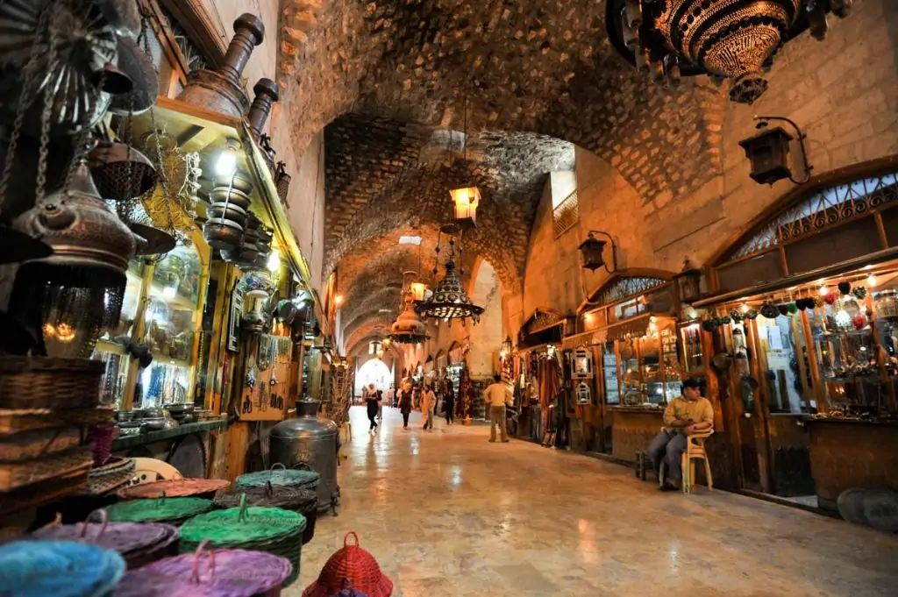

Multimédia
Nesta página encontra conteúdos multimédia sobre Alepo.
Vídeo de fundo Fotografias Vídeo Parallax Poema
Vídeo de fundo
Fotografias





Vídeo
Alepo, uma cidade de histórias
Poesia
Alepo guarda histórias nas suas ruas,
Entre pedras antigas e manhãs azuis.
O vento leva memórias pela cidade,
E cada esquina fala de saudade.